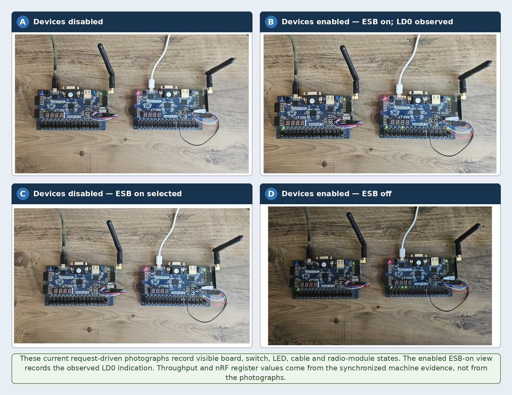
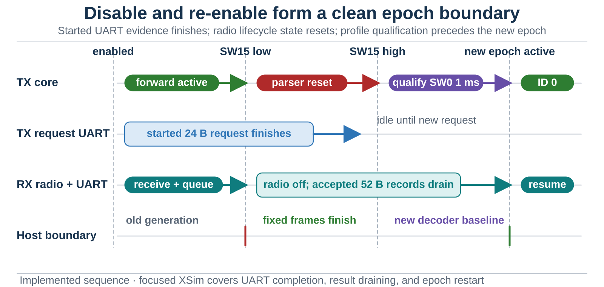
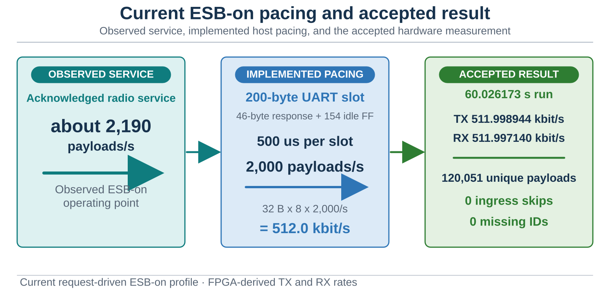
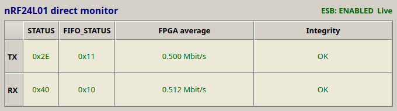
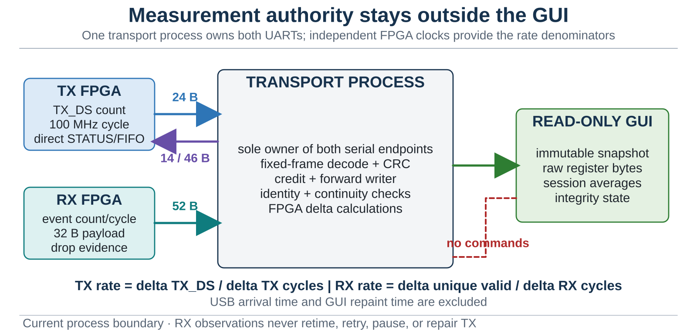

{kind=link}
Problem
Drive the radio from a host-fed stream without hiding skipped, corrupt, duplicated, or out-of-order payload identities behind an attractive throughput number.
PROJECT 05 / nRF UART
A forward-only 32-byte test stream in which the TX FPGA requests work, the host spends bounded credit on fresh incrementing payload IDs, and the RX FPGA reports passive delivery and radio-state evidence. A compact two-role monitor keeps rate and integrity claims tied to FPGA counters rather than GUI refresh timing.

Drive the radio from a host-fed stream without hiding skipped, corrupt, duplicated, or out-of-order payload identities behind an attractive throughput number.
The TX board grants bounded request credit, the host supplies only fresh deterministic IDs, and the passive RX path exports payload, counter, cycle, drop, STATUS, and FIFO_STATUS evidence.
The retained 60.026173-second ESB-on run measured 511.998944 kbit/s TX service and 511.997140 kbit/s RX delivered goodput across 120,051 unique payloads, with zero missing IDs, ingress skips, or recorded evidence, UART, and integrity errors.


| Gate | Retained result | Verdict |
|---|---|---|
| Host regression | 176/176 Python tests passed for the accepted request-driven source. | PASS |
| Focused XSim | TX 6/6 and RX 7/7 focused benches passed. | PASS |
| Routed timing | TX WNS/WHS +0.515/+0.122 ns; RX WNS/WHS +1.830/+0.037 ns. | PASS |
| Programming and profile | 10/10 fresh program-high trials and their profile assertions reported ESB enabled on both trusted role streams. | PASS |
| Synchronized run | 60.026173 s; all 600 sampled TX and RX rows were measurement-ready. | PASS |
| TX FPGA service | 511.998944 kbit/s from cumulative TX_DS count and FPGA-cycle anchors. | PASS |
| RX delivered goodput | 511.997140 kbit/s from unique validated payload and RX-FPGA cycle deltas. | PASS |
| Delivery integrity | 120,051 unique validated payloads; zero missing IDs, ingress skips, evidence-path errors, UART errors, and integrity errors. | ZERO-GAP OBSERVATION |
| Direct radio snapshots | Final TX STATUS/FIFO_STATUS 0x2E/0x11; RX 0x40/0x10. These remain phase-specific SPI samples. | PASS with boundary |
Documentation basis: request-driven-uart-debugger/docs/evidence/2026-08-21_ESB_ON_500K_ACCEPTANCE/. This is a finite zero-gap observation for the retained source, bitstreams, devices, configuration, and interval—not a universal claim that all future RF traffic is lossless.

TX service uses cumulative TX_DS events and TX-FPGA cycles. RX delivered goodput uses unique validated payloads and RX-FPGA cycles. Host UART arrival time and GUI refresh time are excluded.
STATUS and FIFO_STATUS are sampled during defined SPI phases, not continuously scanned. FIFO_STATUS exposes empty/full boundaries but cannot distinguish FIFO depth one from depth two.

The accepted interval is a finite zero-gap observation, not proof that every future run or RF environment will remain lossless. STATUS and FIFO_STATUS are phase-specific controller samples, and the retained result does not replace an external RF or SPI timing capture.
Repeat the same acceptance across longer durations, power cycles, channels, and RF environments. If hop-level fault localization is required, retain synchronized external SPI or radio-side evidence beside the FPGA and host records.
Repository state: this request-driven project remains a local independent repository. No inactive or misleading public-repository button is shown.
{kind=link}
{kind=link}
{kind=link}
{kind=link}